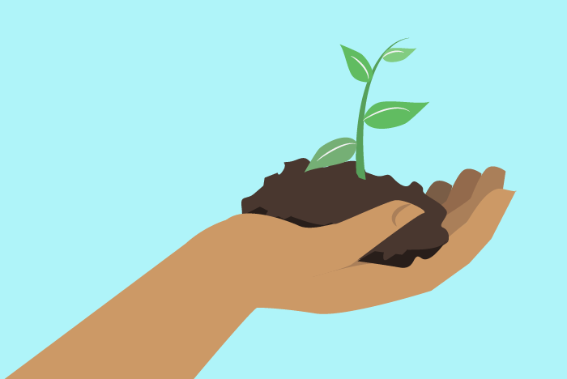
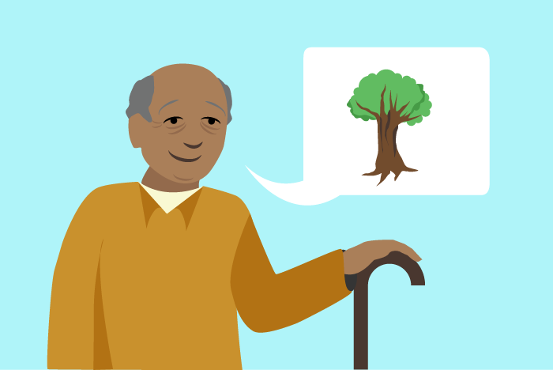
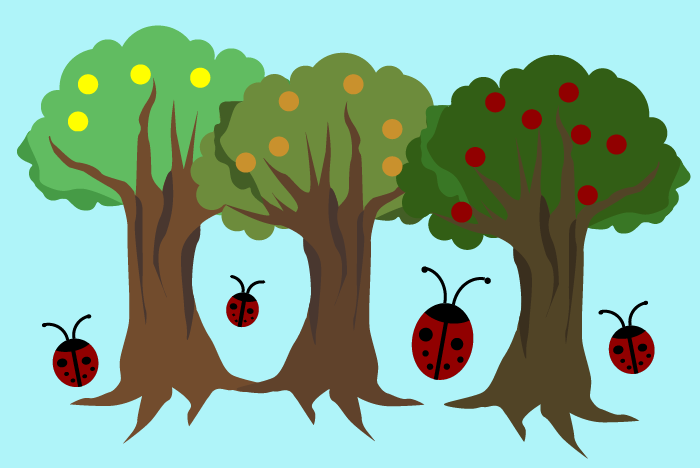

Talvez você já tenha ouvido falar dos orgânicos apenas como “produtos
que não utilizam agrotóxicos”.

No entanto, os orgânicos são muito mais do que isso. Além de não utilizarem agrotóxicos de nenhum tipo e nem fertilizantes químicos, os orgânicos buscam preservar o meio ambiente e promover relações sociais justas.

Para tal, a agricultura orgânica integra conhecimentos científicos e populares por meio da agroecologia.
A produção orgânica preza por desenvolvimento econômico local e sustentável.

Busca-se manter a biodiversidade, o equilíbrio dos ecossistemas e os nutrientes do solo.
Nessa ideologia, busca-se reduzir as desigualdades de gênero e manter a juventude rural no campo.